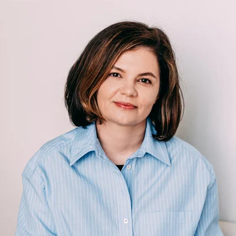

Individuālas konsultācijas
Klīniskā un veselības psihologa konsultācija pieaugušajiem un jauniešiem no 12 gadiem.
- Depresija un nomākts garastāvoklis
- Neirotiskā spektra traucējumi
- Trauksme un ilgstošs stress
- Grūtības, kas ietekmē veselību un ikdienu
Esmu Kristīne Baranovska — sertificēta klīniskā un veselības psiholoģe. Strādāju ar pieaugušajiem un jauniešiem no 12 gadu vecuma, kā arī ar pāriem un ģimenēm sistēmiskās ģimenes psihoterapijas pieejā.

Grūtības nepāriet no tā, ka par tām klusē. Tās kļūst vieglākas, kad ir kāds, kas palīdz tās izprast.
Savā darbā balstos uz klīniskās un veselības psiholoģijas metodēm. Konsultēju cilvēkus, kuri saskaras ar depresiju, neirotiskā spektra traucējumiem un ilgstošu stresu.
Strādāju arī kā sistēmiskā ģimenes psihoterapeite. Tas nozīmē, ka uz grūtībām raugos plašāk — ne tikai kā uz viena cilvēka pieredzi, bet arī kā uz attiecībām, kurās viņš atrodas. Tāpēc uz konsultāciju var nākt gan viens pats, gan pārī, gan visa ģimene.
Konsultēju pieaugušos un bērnus no 12 gadu vecuma. Sarunas notiek latviešu, angļu vai krievu valodā — izvēlieties to, kurā runāt ir ērtāk.
Dažreiz pietiek ar individuālu sarunu. Citreiz jautājums ir attiecībās, un tad pie psihologa vērts atnākt kopā.
Klīniskā un veselības psihologa konsultācija pieaugušajiem un jauniešiem no 12 gadiem.
Darbs ar pāriem un ģimenēm, kad grūtības rodas savstarpējās attiecībās.
Uz konsultāciju nav jāgaida galējā robeža. Pietiek ar sajūtu, ka pašam vairs netiek galā.
Lai pieteikšanās nav vēl viens iemesls uztraukumam, īsi par to, kas notiek pēc kārtas.
Vizīti piesakāt portālā epoliklinika.lv vai pa tālruni 67799977. Iepriekš nekas nav jāsagatavo.
Pirmajā reizē runājam par to, kas jūs atvedis. Es uzdodu jautājumus, lai saprastu situāciju pilnīgāk — arī tad, ja jums pašam vēl nav skaidra formulējuma.
Sarunas beigās vienojamies, ar ko strādāsim tālāk un cik bieži tiekamies. Plāns pieder jums, tāpēc to veidojam kopā.
Tālākās tikšanās notiek pēc norunāta ritma. Ja jautājums skar attiecības, uz kādu no reizēm var pievienoties partneris vai ģimene.
Reizēm pietiek ar vienu telpu, kurā drīkst runāt lēni.
Kristīne BaranovskaPiezvaniet un pasakiet, ka vēlaties pierakstīties pie psihologa Kristīnes Baranovskas. Pārējo palīdzēs sakārtot reģistratūra.
Zvanīt 67799977 Pieteikties epoliklinika.lvKrīzes situācijā, kad apdraudēta dzīvība, zvaniet 113 vai Krīzes un konsultāciju centram “Skalbes” 116123 (visu diennakti).